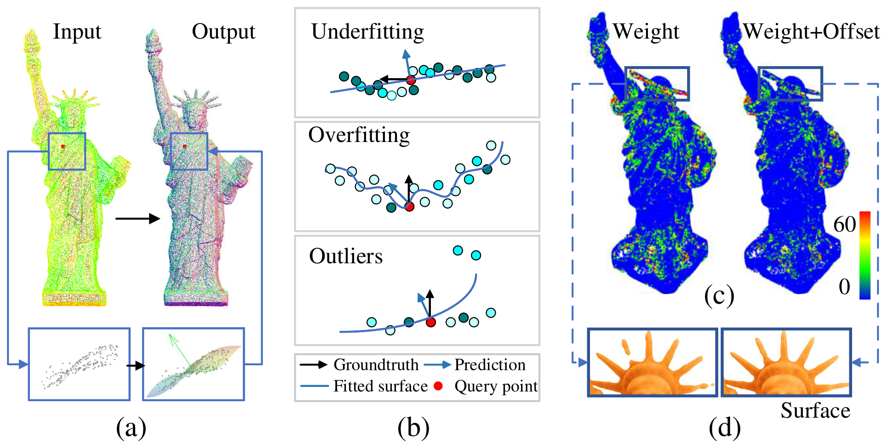
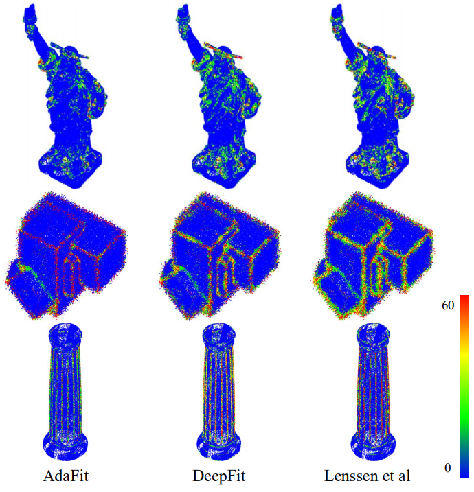
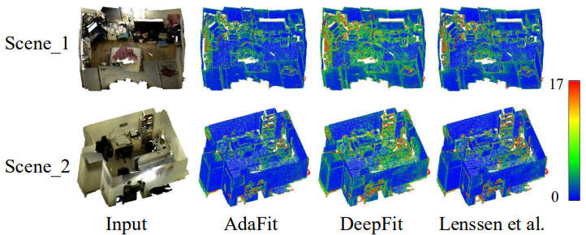

Abstract
This paper presents a neural network for robust normal estimation on point clouds, named AdaFit, that can deal with point clouds with noise and density variations. Existing works use a network to learn point-wise weights for weighted least squares surface fitting to estimate the normal, which has difficulty in finding accurate normals in complex regions or containing noisy points. By analyzing the step of weighted least squares surface fitting, we find that it is hard to determine the polynomial order of the fitting surface and the fitting surface is sensitive to outliers. To address these problems, we propose a simple yet effective solution that adds an additional offset prediction to improve the quality of normal estimation. Furthermore, in order to take advantage of points from different neighborhood sizes, a novel Cascaded Scale Aggregation layer is proposed to help the network predict more accurate point-wise offsets and weights. Extensive experiments demonstrate that AdaFit achieves state-of-the-art performance on both the synthetic PCPNet dataset and the real-word SceneNN dataset.
Results

